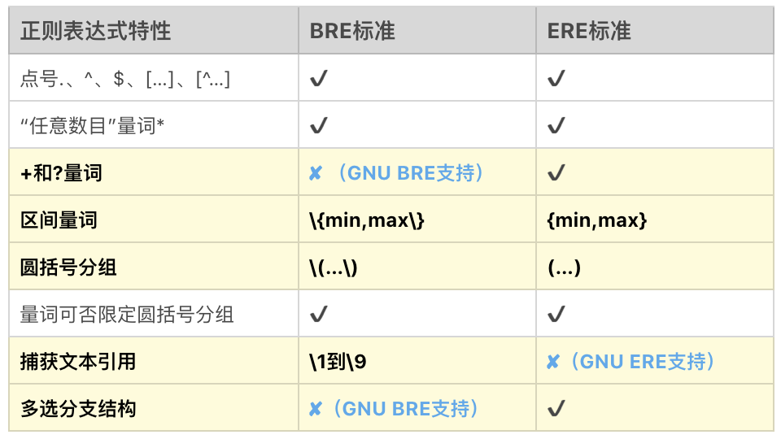
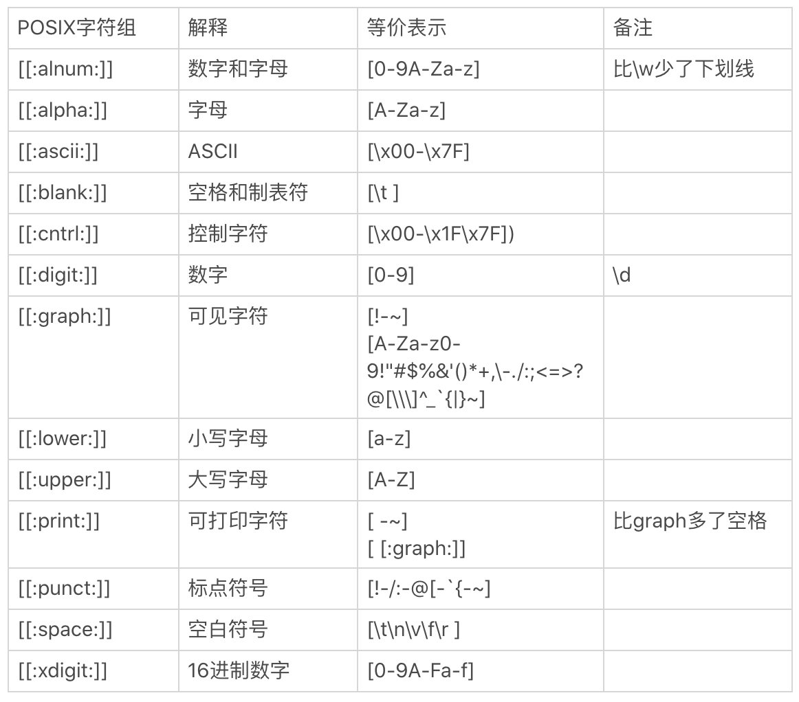
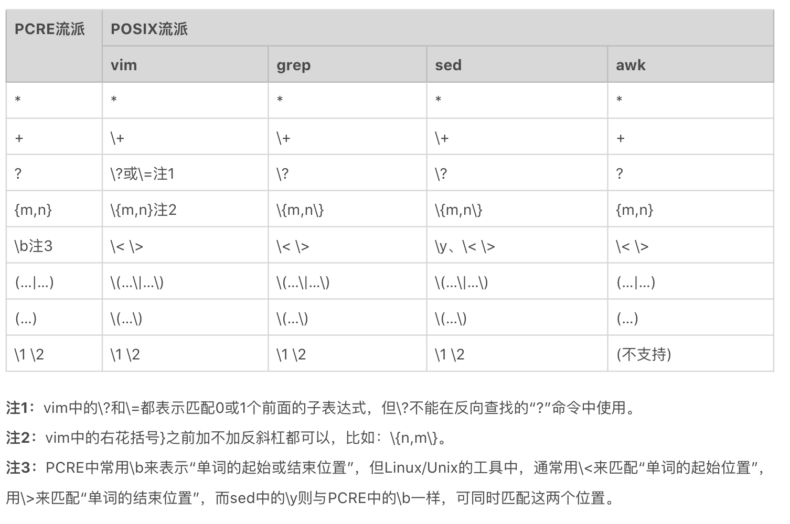
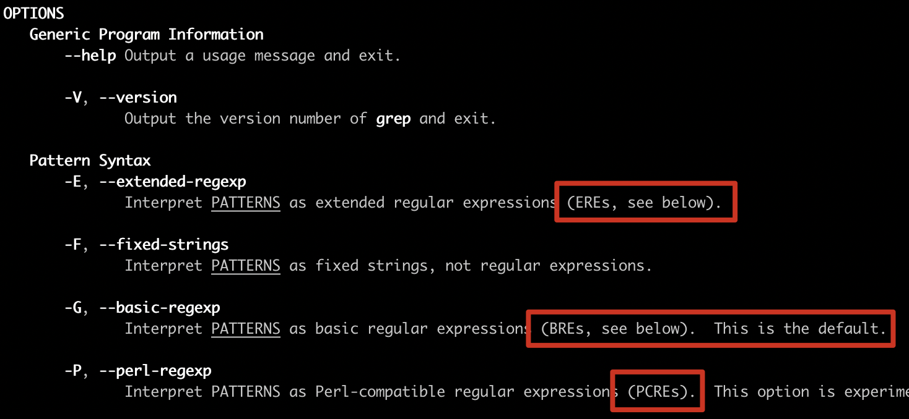
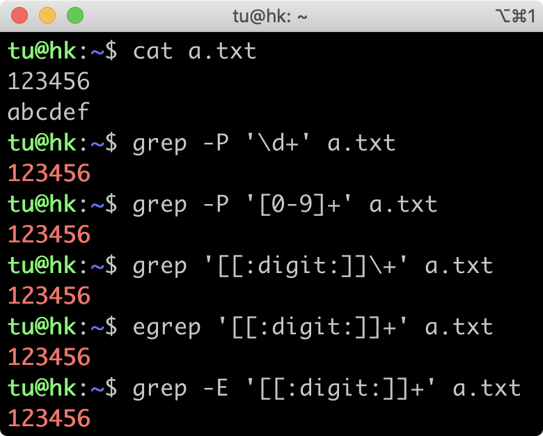
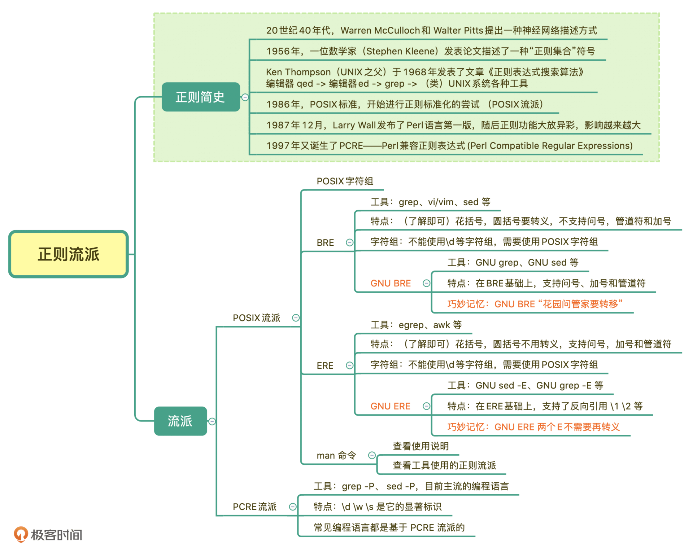

- 00 导读 余晟：我是怎么学习和使用正则的？.md.html
- 00 开篇词丨学习正则，我们到底要学什么？.md.html
- 01 元字符：如何巧妙记忆正则表达式的基本元件？.md.html
- 02丨量词与贪婪：小小的正则，也可能把CPU拖垮！.md.html
- 03 分组与引用：如何用正则实现更复杂的查找和替换操作？.md.html
- 04 匹配模式：一次性掌握正则中常见的4种匹配模式.md.html
- 05 断言：如何用断言更好地实现替换重复出现的单词？.md.html
- 06 转义：正则中转义需要注意哪些问题？.md.html
- 07 正则有哪些常见的流派及其特性？.md.html
- 08 应用1：正则如何处理 Unicode 编码的文本？.md.html
- 09 应用2：如何在编辑器中使用正则完成工作？.md.html
- 10 应用3：如何在语言中用正则让文本处理能力上一个台阶？.md.html
- 11 如何理解正则的匹配原理以及优化原则？.md.html
- 12 问题集锦：详解正则常见问题及解决方案.md.html
- 加餐 从编程语言的角度来理解正则表达式.md.html
- 结束语 使用正则提高你的人生效率.md.html
- 捐赠
07 正则有哪些常见的流派及其特性？
你好，我是涂伟忠。今天我来给你讲讲正则常见的流派及其特性。
你可能要问了，讲正则流派有啥用呢？不如多来点实战啊。其实，我们去了解正则的演变过程是很有必要的。因为你一旦了解了正则的演变过程之后，就能够更加正确地去使用正则，尤其是在 Linux系统中。
那我们就先来看一个有关Linux系统的例子，你先来感受一下。
如果你在 Linux 系统的一些命令行中使用正则，比如使用 grep 过滤内容的时候，你可能会发现结果非常诡异，就像下图这样，在grep命令中，使用正则\d+取不到数据，甚至在 egrep 中输出了英文字母d那一行。

这个执行结果的原因就和正则的演变有着密不可分的关系。那到底有什么样的关系呢？我们接着往下看，我从正则的发展历史给你讲起。
正则表达式简史
正则表达式的起源，可以追溯到，早期神经系统如何工作的研究。在20世纪40年代，有两位神经生理学家（Warren McCulloch和Walter Pitts），研究出了一种用数学方式来描述神经网络的方法。
1956年，一位数学家（Stephen Kleene）发表了一篇标题为《神经网络事件表示法和有穷自动机》的论文。这篇论文描述了一种叫做“正则集合（Regular Sets）”的符号。
随后，大名鼎鼎的Unix之父Ken Thompson于1968年发表了文章《正则表达式搜索算法》，并且将正则引入了自己开发的编辑器qed，以及之后的编辑器ed中，然后又移植到了大名鼎鼎的文本搜索工具grep中。自此，正则表达式被广泛应用到Unix系统或类Unix系统(如macOS、Linux)的各种工具中。
随后，由于正则功能强大，非常实用，越来越多的语言和工具都开始支持正则。不过遗憾的是，由于没有尽早确立标准，导致各种语言和工具中的正则虽然功能大致类似，但仍然有不少细微差别。
于是，诞生于1986年的POSIX开始进行标准化的尝试。POSIX作为一系列规范，定义了Unix操作系统应当支持的功能，其中也包括正则表达式的规范。因此，Unix系统或类Unix系统上的大部分工具，如grep、sed、awk等，均遵循该标准。我们把这些遵循POSIX正则表达式规范的正则表达式，称为POSIX流派的正则表达式。
在1987年12月，Larry Wall发布了Perl语言第一版，因其功能强大一票走红，所引入的正则表达式功能大放异彩。之后Perl语言中的正则表达式不断改进，影响越来越大。于是在此基础上，1997年又诞生了PCRE——Perl兼容正则表达式（Perl Compatible Regular Expressions）。
PCRE是一个兼容Perl语言正则表达式的解析引擎，是由Philip Hazel开发的，为很多现代语言和工具所普遍使用。除了Unix上的工具遵循POSIX标准，PCRE现已成为其他大部分语言和工具隐然遵循的标准。
之后，正则表达式在各种计算机语言或各种应用领域得到了更为广泛的应用和发展。POSIX流派 与 PCRE流派 是目前正则表达式流派中的两大最主要的流派。
正则表达式流派
就像前面说的一样，目前正则表达式主要有两大流派（Flavor）：POSIX流派与PCRE流派。下面我们分别来看看。
1. POSIX流派
这里我们先简要介绍一下POSIX流派。POSIX 规范定义了正则表达式的两种标准：
- BRE标准（Basic Regular Expression 基本正则表达式）；
- ERE标准（Extended Regular Expression 扩展正则表达式）。
接下来，我们一起来看一下这两种标准的异同点。
BRE标准 和 ERE标准
早期BRE与ERE标准的区别主要在于，BRE标准不支持量词问号和加号，也不支持多选分支结构管道符。BRE标准在使用花括号，圆括号时要转义才能表示特殊含义。BRE标准用起来这么不爽，于是有了 ERE标准，在使用花括号，圆括号时不需要转义了，还支持了问号、加号 和 多选分支。
我们现在使用的Linux发行版，大多都集成了GNU套件。GNU在实现POSIX标准时，做了一定的扩展，主要有以下三点扩展。
- GNU BRE支持了 +、?，但转义了才表示特殊含义，即需要用
\+、\?表示。 - GNU BRE支持管道符多选分支结构，同样需要转义，即用
\|表示。 - GNU ERE也支持使用反引用，和BRE一样，使用 \1、\2…\9 表示。
BRE标准和ERE标准的详细区别，我给了你一个参考图，你可以看一下，浅黄色背景是BRE和ERE不同的地方，三处天蓝色字体是GNU扩展。

总之，GNU BRE 和 GNU ERE 它们的功能特性并没有太大区别，区别是在于部分语法层面上，主要是一些字符要不要转义。
POSIX字符组
POSIX流派还有一个特殊的地方，就是有自己的字符组，叫POSIX字符组。这个类似于我们之前学习的 \d 表示数字，\s表示空白符等，POSIX中也定义了一系列的字符组。具体的清单和解释如下所示：

2. PCRE流派
除了POSIX标准外，还有一个Perl分支，也就是我们现在熟知的PCRE。随着Perl语言的发展，Perl语言中的正则表达式功能越来越强悍，为了把Perl语言中正则的功能移植到其他语言中，PCRE就诞生了。
目前大部分常用编程语言都是源于PCRE标准，这个流派显著特征是有\d、\w、\s这类字符组简记方式。
不过，虽然PCRE流派是从Perl语言中衍生出来的，但与Perl语言中的正则表达式在语法上还是有一些细微差异，比如PHP的preg正则表达式(Perl Regular Expression)与Perl正则表达式的差异可看这里。
考虑到目前绝大部分常用编程语言所采用的正则引擎，基本都属于PCRE流派的现实情况，我们的课程也是主要讲解PCRE流派。前面，对于正则表达式语法元素的解释都是以PCRE流派为准。
PCRE流派的兼容问题
虽然PCRE流派是与Perl正则表达式相兼容的流派，但这种兼容在各种语言和工具中还存在程度上的差别，这包括了直接兼容与间接兼容两种情况。
而且，即便是直接兼容，也并非完全兼容，还是存在部分不兼容的情况。原因也很简单，Perl语言中的正则表达式在不断改进和升级之中，其他语言和工具不可能完全做到实时跟进与更新。
- 直接兼容，PCRE流派中与Perl正则表达式直接兼容的语言或工具。比如Perl、PHP preg、PCRE库等，一般称之为Perl系。
- 间接兼容，比如Java系（包括Java、Groovy、Scala等）、Python系（包括Python2和Python3）、JavaScript系（包括原生JavaScript和扩展库XRegExp）、.Net系（包括C#、VB.Net等）等。
在Linux中使用正则
在遵循POSIX规范的UNIX/LINUX系统上，按照 BRE标准 实现的有 grep、sed 和 vi/vim 等，而按照 ERE标准 实现的有 egrep、awk 等。
在UNIX/LINUX系统里PCRE流派与POSIX流派的对比，我为你整理了一个表，你可以看一下。

刚刚我们提到了工具对应的实现标准，其实有一些工具实现同时兼容多种正则标准，比如前面我们讲到的 grep 和 sed。如果在使用时加上-E选项，就是使用ERE标准；如果加上-P选项，就是使用PCRE标准。
使用 ERE 标准
grep -E '[[:digit:]]+' access.log
使用 PCRE 标准
grep -P '\d+' access.log
在使用具体命令时，如何知道属于哪个流派呢？你不用担心太多了记不住。在Linux系统中有个 man 命令可以帮助我们。比如，我在 macOS 上执行 man grep ，可以看到选项 -G 是指定使用 BRE标准（默认），-E是ERE标准，-P是PCRE标准。所以，在使用具体工具时，你通过这个方法查一下命令的说明就好了。

我们再看开篇提出的问题。
通过今天的学习，我们搞懂了各流派的差异，以及命令实现的是哪个正则标准。在 grep 中使用 \d+ 查找不到结果，是因为 grep 属于 BRE 流派，不支持 \d 来表示数字，加号也要转义才能表示量词的一到多次，所以无法找出数字那一行。如果你一定要用BRE流派，可以通过使用POSIX字符组 和 转义加号 来实现。而egrep属于ERE流派，也不支持 \d，\d 相当于字母 d，所以找到了字母那一行。
在grep命令中，你可以指定参数-P来使用PCRE流派，这样就和我们之前学习到的是一致的了。知道了原因之后，你应该能写出相应的解决方法。下图是一些能工作的方法。

为了方便加深你的理解，我给你提供了一个例子来帮你巩固。你可以使用下面的文本，在Linux中使用grep命令练习查找包含一到多个数字的行。
123456
abcdef
\d
\d+
d+
总结
好了，今天的内容讲完了，我来带你总结回顾一下。
今天我带你简单回顾了下正则表达式的历史。正则主要有两大流派，分别是POSIX流派和PCRE流派。其中POSIX流派有两个标准，分别是BRE标准和ERE标准，一般情况下，我们面对的都是GNU BRE和GNU ERE。它们的主要区别在于，前者要转义。另外， POSIX流派一个特点就是有自己的字符组POSIX 字符组，这不同于常见的 \d 等字符组。
PCRE流派是如今大多数编程语言实现的流派，最大的特点就是支持\d\s\w等，我们前面讲的内容也是基于这个流派进行的。
如果你需要在类Unix平台命令等上使用正则，使用前需要搞清楚工具属于哪个标准，比如grep、sed、vi/vim 等属于BRE标准，egrep、awk 属于ERE标准。而sed -P、grep -P等属于PCRE流派。这些也不需要死记硬背，使用时用man命令看一下就好了。
我在这里给你放了一张今天所讲内容的总结脑图，你可以看一下。另外我还给你提供了一个记忆小窍门，你可以着重记忆一下这句话：GNU ERE名称中有两个E，不需要再转义。而GNU BRE 只有一个E，使用时“花圆问管加”时都要转义。

此外，我还给了你一个Linux/Unix工具与正则表达式的POSIX规范（余晟）的参考链接，你可以看一下。
课后思考
最后，我们来做一个小练习吧。在Linux上使用grep命令，分别实现使用不同的标准（即 BRE、ERE、PCRE ），来查找含有 ftp、http 或 https 的行。你可以动手体验一下不同标准的区别。
https://time.geekbang.org
ftp://ftp.ncbi.nlm.nih.gov
www.baidu.com
www.ncbi.nlm.nih.gov
好，今天的课程就结束了，希望可以帮助到你，也希望你在下方的留言区和我参与讨论，并把文章分享给你的朋友或者同事，一起交流一下。
© 2019 - 2023 Liangliang Lee. Powered by gin and hexo-theme-book.